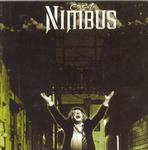

| Artist: | Cast |
| Title: | Nimbus |
| Label: | Musea FGBG4573 |
| Length(s): | 79 minutes |
| Year(s) of release: | 2004 |
| Month of review: | [02/2005] |
| 1) | Ladrona De Suenos (parte I) | 5.26 |
| 2) | 911 (parte I) - 911 | 9.31 |
| 3) | 911 (parte Ii) - Next Day | 3.16 |
| 4) | 911 (parte Iii) - My New Home | 2.03 |
| 5) | Volando En Uno Mismo | 5.01 |
| 6) | Sucio Nino Bien (parte I) - Sucio Nino Bien | 5.55 |
| 7) | Sucio Nino Bien (parte Ii) - Suenos De Platino | 5.53 |
| 8) | Dias De Sol Y Luz | 5.02 |
| 9) | Ladrona De Suenos (parte Ii Puerto Prohibido) | 2.39 |
| 10) | Ladrona De Suenos (parte Iii Tragicomedia) | 3.58 |
| 11) | Un Siglo De Invierno (parte I) - Cataclismo | 6.23 |
| 12) | Un Siglo De Invierno (parte Ii) - Esperanza Austral | 5.10 |
| 13) | En La Cueva Y El Bosque | 3.20 |
| 14) | Reunion 2003 | 5.16 |
| 15) | Hojarasca | 5.28 |
| 16) | Extension 17 | 4.34 |
Suenos De Platino is a bit of an odd track: although the guitars have the lingering sound we are used to, the rhythm and style of especially the first half of the track is pretty much avant prog, and would fit in nicely with the sort of material released on Cuneiform. As the track continues the rhythm becomes more regular and the wind abates. This more experimental feel returns on Ladrona De Suenos iii, although this leans more towards jazzrock.
Dias De Sol Y Luz introduces female vocals, which are quite off key. She's not the sole vocalist on the track, but her influence is still too strong.
Extension 17 clearly exhibits the sort of meandering jazzrocky path the band tends to follow at times too. Although by no means a striking track, it does clearly show one of the bands main interests.